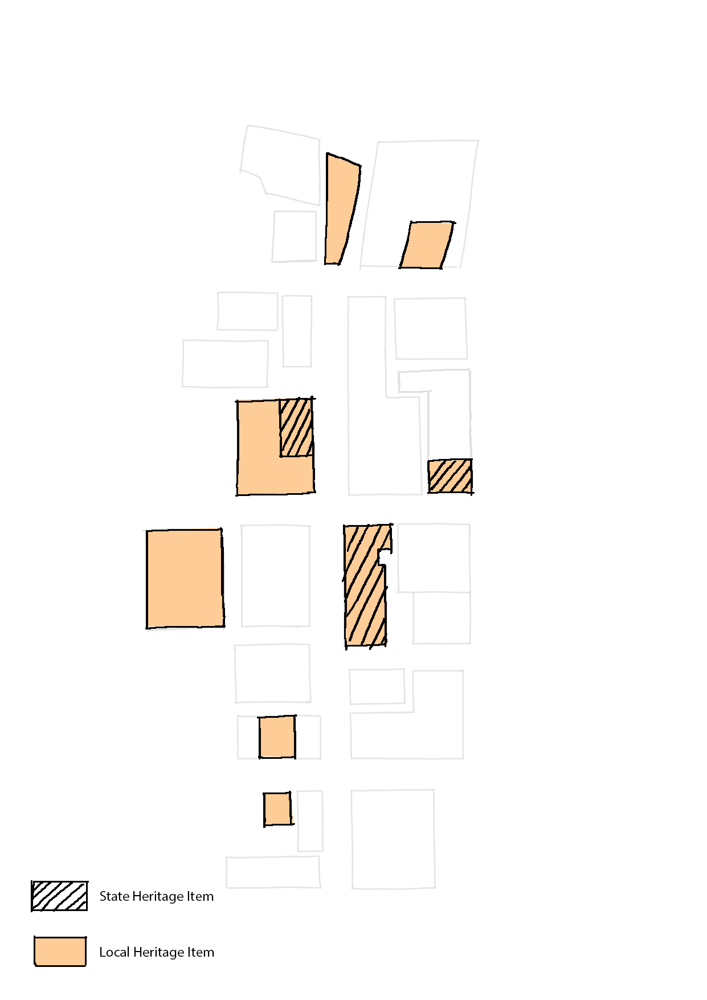
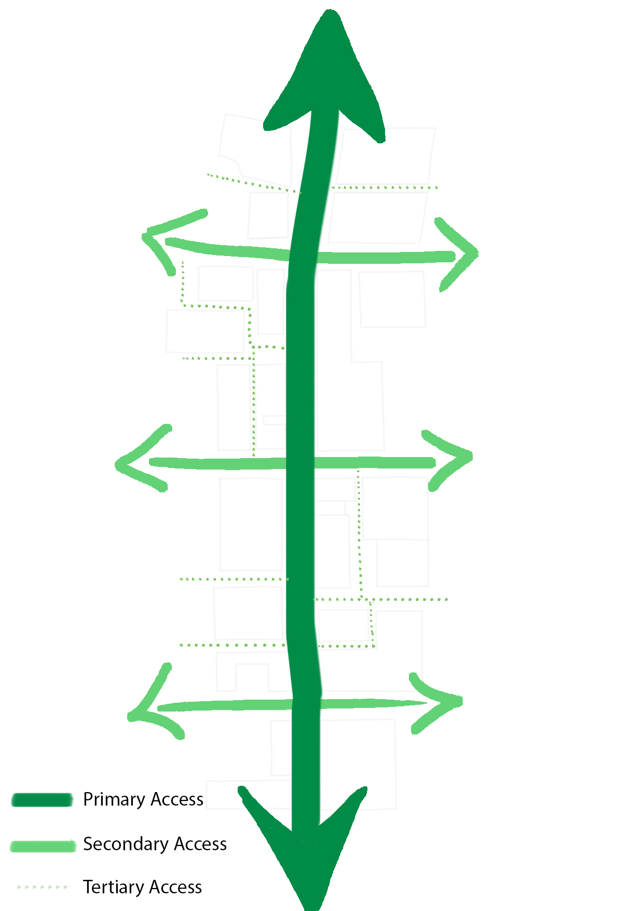

Civic Link in Parramatta CBD
The Transformation
Government is going to build an open green corridor by connecting the Parramarra Square and River Square, which looks like a conceptual
bridge between the Parramatta River and the Train Rail.

Key moves
*Be an identifiable place.
*Connect The Parramatta Square and The River Square in physical and symbolic level.

*Demolish the Horwood Place Car Park and rebuilt and 70 Macquaire Street, which are critical to the Civic Link because these two site
block the way.

*Recognise and respond to heritage along the Link.

*Develop adjoining commercial spaces.
*Adjust public transport in surrounding area.
